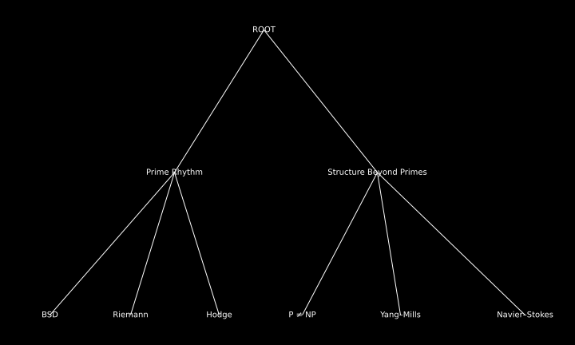

Manifest
The MillenniumChecked project presents verified resolutions to the seven Millennium Prize Problems, derived through a unified structural understanding of prime rhythm and mathematical resonance.
Each problem, though different in domain, finds resolution through the same harmonic system of numerical order — constructed not through approximation, but through discrete structure and resonance.
Structure of the Proofs

Each branch links to a dedicated page — all rooted in one rhythm.